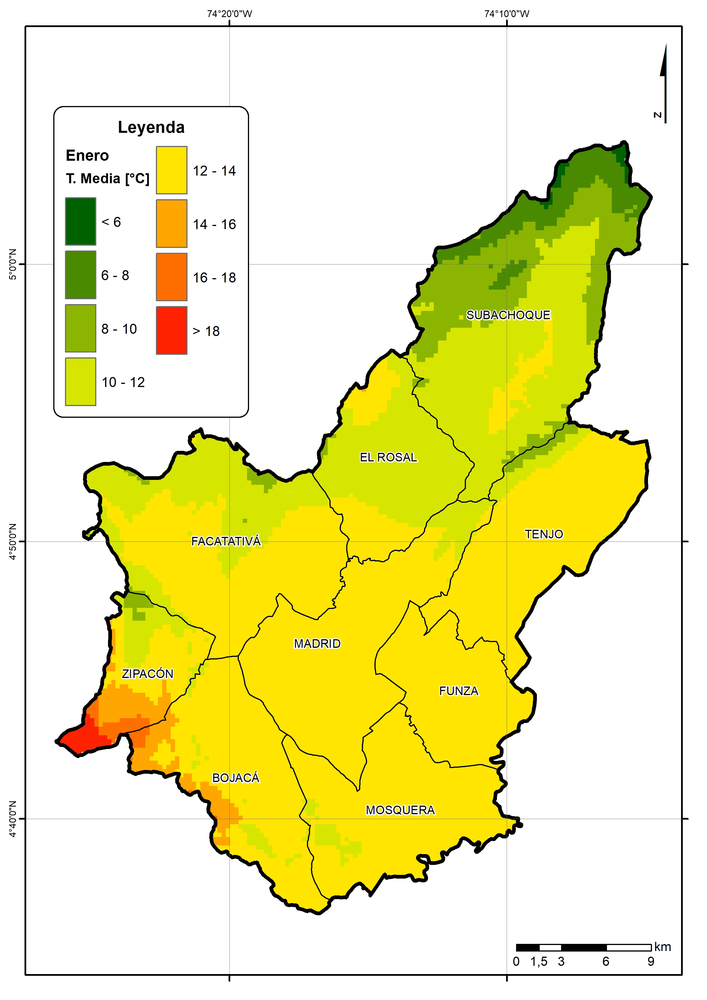

Estudio Agroclimático para el cultivo de papa
Contenido
Caracterización climatica
Seleccione una opción:
Presentación
Brillo solar
Evapotranspiración
Humedad relativa
Precipitación
Temperatura máxima
Temperatura media
Temperatura mínima
Variabilidad climática
Modelos
Seleccione una opción:
Balance hídrico
Temperatura media
Galería
Resumen
Animación
Mes del año:
Enero
Febrero
Marzo
Abril
Mayo
Junio
Julio
Agosto
Septiembre
Octubre
Noviembre
Diciembre

Vista del mapa
×
Su navegador no permite visualizar el gráfico.
Mes del año: Enero
Seleccione opción:
Promedio anual
Trimestre: diciembre a febrero
Trimestre: marzo a mayo
Trimestre: junio a agosto
Trimestre: septiembre a noviembre